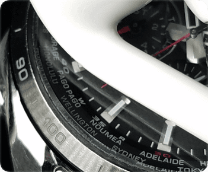
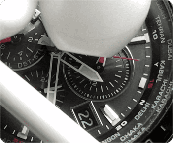
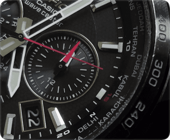

步骤
1
准备好iPhone、手表、耳机。（你也可以使用iPhone扬声器）
2
参照手表说明书，检查本地时间设定是否正确，以在“中国”为例，手表秒针指向“HONG KONG”。

3
连接耳机，在电波表校时中选择“BPC”。
点击“开始”，把音量调至最大，耳机发出“嗒嗒嗒嗒”的声音。
4
参照手表说明书，把手表调至“手动接收电波”模式，手表秒针指向“R”。
5
把耳机放在手表镜面上，保持静止不动。(表离手机大于 10 厘米)
6
等待手表接收电波，手表秒针指向“W”。

7
大约3分钟左右，接收完成，手表秒针指向“Y”。


8
结束发波，检查时间是否正确。
步骤
步骤
步骤
步骤
步骤
步骤
步骤
*如果失败请使多次尝试或者使用iPhone扬声器，也可以在“设置中”和我们联系。
*如果你的手表说明书遗失，请在“设置”中向我们咨询，我们提供免费检索服务。